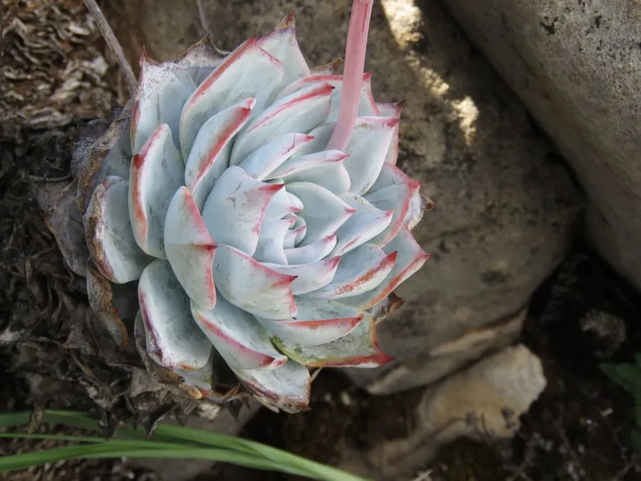

多肉植物 · 植物界
蓝石莲 Echeveria peacockii

景天科拟石莲花属多肉，叶片蓝灰色、覆白粉，莲座呈优雅的蓝紫色，原产墨西哥，是栽培广泛、容易群生的石莲花。
- 分类
- 门被子植物门纲木兰纲目虎耳草目科景天科属拟石莲花属
- 栖息环境
- 墨西哥中部干旱山地的岩石与灌丛间
- 地理分布
- 原产墨西哥中部，世界各地广泛盆栽
- 保护级别
- 暂无评估
物种志
蓝石莲为景天科拟石莲花属的肉质草本，叶片匙形，长 5–8 厘米，先端具短尖，叶面蓝灰色，覆一层白色蜡粉，叶缘在强光和温差下泛淡粉红。叶片排列成莲座状，直径 10–20 厘米，老株可形成短茎并群生。花梗自叶腋抽出，花橙黄色，花期春季；果实为蓇葖果。
蓝石莲原产墨西哥中部的干旱山地，喜阳光充足、凉爽干燥和通风良好的环境，耐旱、忌积水，夏季高温时生长停滞，需遮阴控水。它叶色蓝灰、莲座端庄，是拟石莲花属中栽培最普遍的种类之一，适合盆栽和组合造景。栽培用疏松透气的颗粒土，生长期干透浇透，冬季保持 5℃ 以上；繁殖以叶插、分株和枝插为主，成活容易。
形态与习性
- 冠幅莲座直径 10–20 厘米
- 叶片匙形，蓝灰色，覆白色蜡粉
- 花期春季，花橙黄色
- 光照喜充足阳光，夏季适当遮阴
- 水分耐旱，干透浇透
- 土壤疏松透气的颗粒土
- 繁殖叶插、分株、枝插
- 耐寒冬季需保持 5℃ 以上
趣味知识
- 蓝石莲的蓝灰色来自叶面蜡粉，擦掉后叶色会变绿。
- 它容易在基部萌生侧芽，养成多头群生株。
- 夏季高温时蓝石莲会短暂休眠，此时应减少浇水。